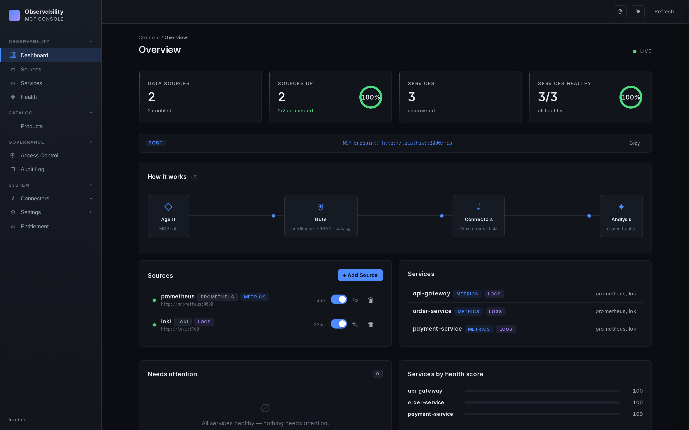

The unified observability gateway for AI agents.
What Grafana did for dashboards, we do for AI agents.
npm: @thotischner/observability-mcp ghcr.io/thotischner/observability-mcp
One vendor. PromQL only.
Another silo. Different schema.
Third process. Third config.
Yet another one.
...
Tomorrow's stack.
Agents that reason across systems juggle N disconnected servers.
There is no unified abstraction layer.
Model Context Protocol — Anthropic, open spec, 2024.
A standard way for AI agents to talk to external systems.
Streamable HTTP transport • JSON-RPC 2.0 • One round-trip per tool call
npx @thotischner/observability-mcp
# open http://localhost:3000
Add Prometheus / Loki via the Web UI or env vars.
Point any MCP client at :3000/mcp.
| Tool | Signal | What it does |
|---|---|---|
list_sources | meta | Discover backends & their health |
list_services | meta | Discover services across all backends |
query_metrics | metrics | Time-series + summary stats + per-instance breakdown |
query_logs | logs | Log entries with error counts and top patterns |
get_service_health | unified | 0–100 score combining metrics & logs |
detect_anomalies | unified | Cross-signal anomalies via z-score analysis |
Same shape regardless of backend. Adding Datadog or InfluxDB doesn't change the tool surface — only adds another connector.
Real Prometheus deployments don't agree on metric names or label conventions. We probe the backend instead of guessing.
Per metric, an ordered list of candidates. Probe per-service:
cpu:
process_cpu_seconds_total # prom-client
↓ fallback
node_cpu_seconds_total{...} # node_exporterThe selected candidate lands in resolvedSeries.
Service identifier is matched against the labels real Prometheus uses:
probe order:
job → service → app → service_nameConfigurable via PROMETHEUS_SERVICE_LABELS.
Same idea on Loki for service_name / container / job / ....
Multi-target services (dev + prod, k8s replicas, ...) collapse into one number by default.
Pass groupBy to see them split:
query_metrics(service="api", metric="cpu", groupBy="instance"){
"metric": "cpu",
"groupBy": "instance",
"groups": [
{ "key": "prod-vm-1:9100", "values": [...], "summary": { "current": 42.1 } },
{ "key": "dev-vm-1:9100", "values": [...], "summary": { "current": 11.8 } }
],
"resolvedSeries": "100 - avg by(instance) (rate(node_cpu_seconds_total{...}[1m])) * 100"
}
Without groupBy, the response includes a hint:
"2 distinct instances exist for this service. Pass groupBy="instance" to break it down."
curl -X POST :8081/chaos/error-spikedetect_anomalies →
finds CPU spike (3.4σ), request rate droppingquery_logs →
finds "internal error during POST /payments (6x)"
Sources · Services · Health · Settings — dark theme, real-time, zero deps.
npx @thotischner/observability-mcpLocal dev, zero install.
docker run -p 3000:3000 \
ghcr.io/thotischner/...
observability-mcp:latestMulti-arch (amd64 + arm64), native runners.
git clone …
docker-compose upFull POC: 3 services + chaos.
npm Provenance signed (SLSA). Multi-arch Docker built natively, no QEMU emulation.
Six issues filed by users, six closed via auto-pipeline. Time from issue → live release: minutes.
groupBy breakdownnpx @thotischner/observability-mcpgithub.com/ThoTischner/observability-mcp
Star ⭐ helps others discover the project.
Apache 2026 — MIT License — Built with TypeScript, Node 20, MCP SDK 1.12+